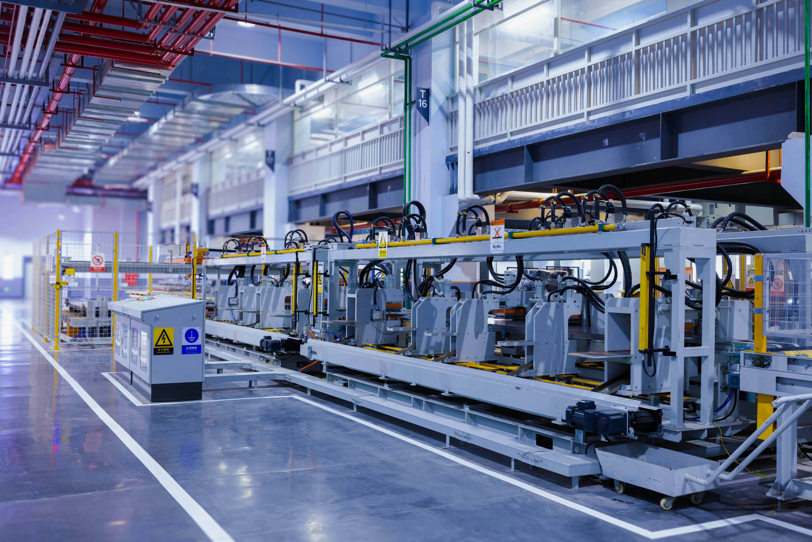

Improving Production Efficiency with OEE Monitoring and Analytics
The effectiveness of production processes is a cornerstone of any manufacturing business. One key metric to measure and optimize these processes is the Overall Equipment Effectiveness (OEE). Recently, I worked on a project aimed at enhancing OEE in one of our company’s foreign production facilities, with the ultimate goal of extending the initiative to all production sites. In this article, I will explain what OEE is, why it matters, and how we implemented a data-driven solution to monitor and improve it.
SQL Server
Power BI

What is OEE and Why is it Important?
OEE is a standard metric used to assess the efficiency and productivity of manufacturing equipment. It combines three factors:
- Availability: The percentage of scheduled time that the equipment is available to operate.
- Performance: The speed at which the equipment runs as a percentage of its designed capacity.
- Quality: The proportion of good parts produced versus the total output.
An OEE score provides a single measure that reflects how well manufacturing equipment is utilized. A high OEE score indicates efficient processes, while a low score points to inefficiencies such as downtime, slow cycles, or quality issues. By improving OEE, manufacturers can reduce costs, increase throughput, and improve overall profitability.
Monitoring OEE in a Foreign Production Facility
To kick off this initiative, we started by implementing an OEE monitoring system in one of our company’s foreign production facilities. This site installed over 40 sensors on key manufacturing machines to capture the necessary data. These sensors provided real-time metrics such as machine status, cycle times, and quality output, which were critical for calculating OEE.
Step 1: Capturing Data with Sensors
The sensors collected data at a high frequency, with updates recorded every second. This granularity ensured that we captured detailed insights into machine performance and could detect even short periods of downtime or inefficiencies. The raw data was transmitted to a centralized database for processing.
Step 2: Storing and Processing Data in SQL Server
The sensor data was imported into a database on SQL Server. This provided a structured environment to store the large volume of data generated by the sensors. Using SQL queries, we performed data transformations to clean, organize, and optimize the dataset. These adjustments included:
- Filtering out irrelevant or erroneous data.
- Standardizing time formats for consistency.
- Aggregating metrics to make them suitable for analysis.
Step 3: Visualizing Data with Power BI
Once the data was prepared, we imported it into Power BI to create an interactive dashboard. The dashboard featured time-series visualizations to track metrics like availability, performance, and quality over time. These visualizations provided stakeholders with actionable insights into production performance. The dashboard was configured to refresh every hour, ensuring that decision-makers had access to near real-time information.
Results and Future Expansion
The implementation of this OEE monitoring system delivered several tangible benefits:
- Improved Visibility: Real-time data allowed managers to quickly identify and address inefficiencies such as unexpected downtime or suboptimal machine performance.
- Data-Driven Decision-Making: The dashboard enabled the team to make informed decisions based on accurate, up-to-date metrics.
- Scalability: The solution was designed with the flexibility to scale. Following the success of the pilot in the foreign facility, plans were initiated to roll out the system across all production sites in the company.
Lesson Learned
This project underscored the importance of precise data collection and processing. The use of high-frequency sensors provided a level of detail that would not have been possible with manual tracking. Additionally, creating a centralized database and ensuring data integrity were critical steps to building a reliable system. Finally, the integration of Power BI proved invaluable for translating complex data into actionable insights that were easy for stakeholders to understand.
Conclusion
By leveraging sensors, SQL Server, and Power BI, we were able to build an OEE monitoring system that transformed raw data into meaningful insights. This project not only improved production efficiency at the initial facility but also laid the foundation for a company-wide initiative to optimize manufacturing processes. It was a rewarding experience to contribute to a solution that directly impacts operational performance and business success.